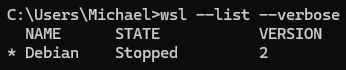
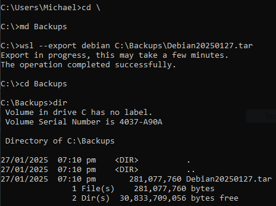
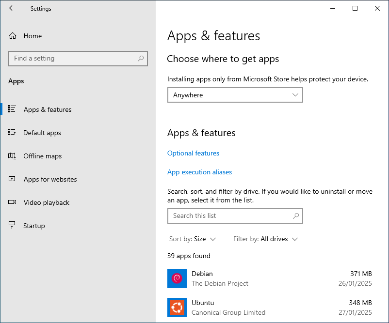
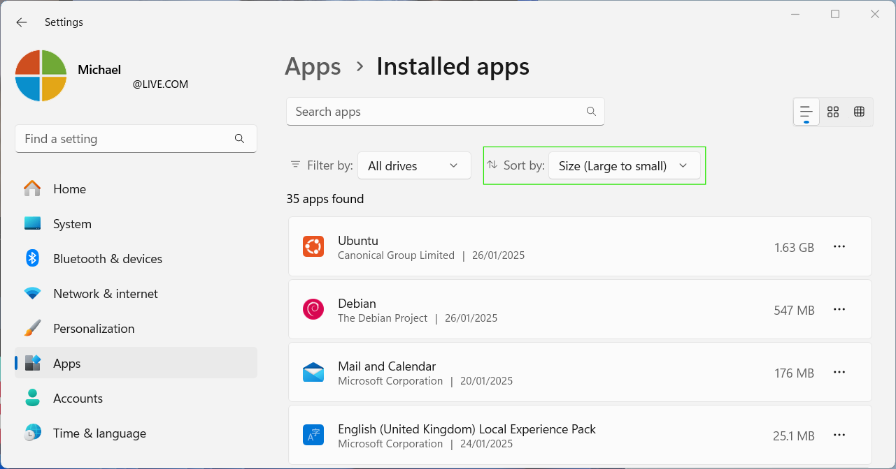
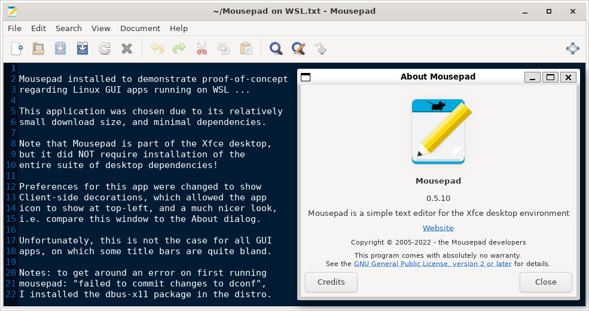

On this page: Preface | What is virtualization? | What is WSL? |
But, is it for me? | What is a Linux distribution? | Prerequisites
Preface:
- Throughout this guide, there are certain tasks for you to carry out. This will help with your understanding, by giving you first-hand experience with these commands, etc.
wslcommand-line arguments/options are displayed in their full iteration. Some (but not all) args/options like--distributionhave a shortened version (-d) ... see Help and Links- All images contain a "title" tag, meaning that if you hover your mouse-cursor over an image, you'll see a little tooltip with a brief description of what the image portrays.
- To view any image in full size, right-click the image, and select
Open image in new tab
The image titled "Windows Beware the Penguins" (attribution link) by
© 2016 Daniel Aleksandersen is licensed under a CC BY 4.0 License.
What is virtualization?
Virtualization in computing is a combination of hardware and software technologies that allows you to basically run one (or more) operating system(s) on-top-of (or within) another operating system. These operating systems are known as the host OS (bare metal) and the guest OS(s) (virtual) respectively. Guest operating systems are colloquially referred to as virtual machines (VMs).
Normally, you'd start by installing special software (called a hypervisor) on the host OS, which manages not only its own program settings, but also the settings for each VM, regarding resource allocation, etc.
By resources, we're talking about the CPU, RAM, and HDD/SSD disk space ... these resources are allocated to each virtual machine according to options that you configure, usually within the hypervisor.
What is WSL?
Windows Subsystem for Linux was first introduced in Windows 10 (Anniversary Update, August 2016). Since then, it has come a long way ... latest iterations are referred to as WSL 2. However, we'll just call it WSL from here on.
Where third-party solutions focus on providing their own UNIX-like experience, WSL aims for native Linux compatibility. For example, it's reported that WSL 2 in Windows 11 retains 95% of the performance of native Ubuntu 20.04 LTS.
The bottom line is that WSL provides the software component of virtualization, for all currently-supported Windows versions (including *Home) to run not only a Linux operating systems within Windows, but Linux **GUI apps as well.
But, is it for me?
You may just want to experiment with Linux as a hobby, or you may need to learn it as part of your school curriculum, or for a work project. You might need to test something within a Linux environment, or you may need to run up a Docker container or two.
If any of these scenarios sound like you, then by all means, give WSL a try. It doesn't cost you anything, and you might even find it useful.
What is a Linux distribution?
To use the Linux lingo, a distribution is often referred to simply as a distro. A distro is one version of the GNU/Linux operating system. Note the addition of the GNU prefix now, which stands for GNU's Not Unix (GNU is a recursive acronym, where one of the letters stands for the acronym itself).
Linux is a kernel, developed by Linus Torvalds starting in 1991, while he was still a student at the University of Helsinki in Finland. Originally referred to in several well-known communications as a new "operating system", technically Linux is "just" the kernel itself (albeit, a very good kernel, powering approximately 96% of servers on the Internet).
GNU makes up the rest of the components required to form a fully-fledged operating system ... everyday software and utilities found in any modern OS.
GNU was developed by Richard Stallman ... he first announced the project in 1993.
For simplicity, we will just use the terms "linux" and "distro" interchangeably, much to the chagrin of many die-hard Linux enthusiasts, no doubt! It's important to recognize the differences in terminology though, because it helps with your understanding about what Linux is, and is not.
Back to the distros, of which there are many ... there are approximately 200 actively-maintained Linux distributions in the wild. Thankfully with WSL, as of January 2025, there are just 14 to choose from.
Prerequisites
- A reasonably modern desktop/laptop computer
- Virtualization must be enabled in the BIOS/UEFI
(this is the hardware component of virtualization) - Windows 10 (build 1607 or later) or Windows 11
- Internet access (while installing the software)
Explanation:
The virtualization feature built into your hardware's CPU must be enabled in order to use WSL. As well as consisting of software, virtualization is a hardware feature, provided by your computer's Central Processing Unit. For the Intel brand of CPUs, this feature is known as VT-x, whereas for the AMD brand, it's called AMD-V.
Guiding you through how to actually enable this setting in your BIOS/UEFI setup is beyond the scope of this tutorial, because every PC brand is slightly different. What we can do, however, is show you how to check, within Windows, whether hardware virtualization is enabled or not ...
in Windows 10:
- Right-click an empty area of the Taskbar and select
Task Manager - Click the
More detailsbutton to expand the window (if applicable) - Along the top row of Task Manager, select the
Performancetab - Ensure that
CPUis selected, then at bottom right, you'll see Virtualization
(you may have to resize or maximize the window to see all the text) - If it says Enabled next to
Virtualization, then all is well
If virtualization is not enabled for your PC, please search on Google for <your-make> <your-model> enable virtualization BIOS UEFI ... you will need to restart your computer to complete these steps.
in Windows 11:
- Right-click an empty area of the Taskbar and select
Task Manager - In the left column of Task Manager, select the
Performancetab - Ensure that
CPUis selected, then at bottom right, you'll see Virtualization
(you may have to resize or maximize the window to see all the text) - If it says Enabled next to
Virtualization, then all is well
If virtualization is not enabled for your PC, please search on Google for <your-make> <your-model> enable virtualization BIOS UEFI ... you will need to restart your computer to complete these steps
Usually, the Glossary comes after-the-fact, i.e. at the end of a book, but here we'll cover these technical terms early, so that you have a better understanding before we dive in ...
Term | PoS | Definition |
bash | n. | An interactive command-interpreter, the default in many Linux distros |
clone | v. | In this context, create an exact copy of a distro *instance (* see below) |
distro | n. | Short for distribution (n.) ... one version of the GNU/Linux operating system |
friendly name | n. | A name for use by humans; in this context, applied to a distribution by its developers |
Home | a. | If someone mentions Windows Home, they're referring to Microsoft's consumer version of the Windows operating system, as opposed to Windows Professional or Server, for example |
$HOME | n. | In all Linux distros exists the /home folder, which contains each user's own |
installation | n. | When we use |
instance | n. | When we run the |
Linux | n. | GNU/Linux (commonly shortened to Linux) ... an open-source operating system, commonly used for servers, but can also be used as a desktop OS |
| n. | An environment variable that contains multiple paths (separated by |
virtualization | n. | A computing technology that creates virtual versions of physical hardware, software, and networking |
wsl | n. | Windows Subsystem for Linux ... a feature of the modern Windows operating system that allows you to run a Linux environment on your Windows machine, without the need for a separate virtual machine or dual booting. It's also the name of the executable program file: |
wsl-name | n. | A name for use by computers; or in this case, the |
As mentioned in a previous section, as of January 2025, there are 14 different Linux distributions available for installation with WSL ... remember to get an updated list before choosing a distro. To do so, run the following command in your terminal:
wsl --list --onlineTo install a particular distro, wsl-name should be used, e.g. --distribution <wsl-name>
wsl-name | Friendly name | MOTD | PKG | MB | Updated |
Ubuntu | Ubuntu | Y | apt | 1669 | Y |
Debian | Debian GNU/Linux | N | apt | 545 | Y |
kali-linux | Kali Linux Rolling | Y | apt | 972 | Y |
Ubuntu-18.04 | Ubuntu 18.04 LTS | N | apt | 1382 | Y |
Ubuntu-20.04 | Ubuntu 20.04 LTS | Y | apt | 2499 | Y |
Ubuntu-22.04 | Ubuntu 22.04 LTS | Y | apt | 1444 | Y |
Ubuntu-24.04 | Ubuntu 24.04 LTS | Y | apt | 1638 | Y |
OracleLinux_7_9 | Oracle Linux 7.9 | N | yum | 1065 | Y |
OracleLinux_8_7 | Oracle Linux 8.7 | N | yum | 1126 | Y |
OracleLinux_9_1 | Oracle Linux 9.1 | N | yum | 1157 | Y |
openSUSE-Leap-15.6 | openSUSE Leap 15.6 | N | zypper | 940 | Y |
SUSE-Linux-Enterprise-15-SP5 | SUSE Linux Enterprise 15 SP5 | N | zypper | 780 | N |
SUSE-Linux-Enterprise-15-SP6 | SUSE Linux Enterprise 15 SP6 | N | zypper | 812 | N |
openSUSE-Tumbleweed | openSUSE Tumbleweed | N | zypper | 556 | Y |
Just for fun | All distros | N/A | Total | 16586 |
On this page: Using the command-line | Post-install tasks (Updates | Hostname)
For the remainder of this tutorial, please substitute any/all mentions of <username> with your own actual Linux/Windows username (as the case may be, and without the angle brackets).
Note that these two usernames are not necessarily the same:
- your Windows 10 username appears when you hover your mouse-cursor over the User icon at the left-hand edge of the Start Menu
- your Windows 11 username appears at the bottom-left corner of the Start Menu
- your Linux distro's username is the one that you assigned when you first set up that distro, and is visible at the Linux command-prompt
Using the command-line
While it is possible to install WSL using mainly GUI methods, it's a good idea to start gaining some familiarity with the command-prompt, as that's a lot of what WSL is about.
Another good reason for installing WSL on the command-line is that it requires one less major step, and thus, one less reboot!
Please do NOT run these commands yet
To get an updated list of available distros before installing, open your Windows terminal and run the following command:
wsl --list --onlineTo install WSL for the first time, run the following command, allowing Ubuntu as default:
wsl --installTo install WSL for the first time, specifying a <different-distro>, run the following command:
wsl --install --distribution DebianTask: now that you've read through the options available, follow these steps to install WSL on your computer:
- view the distros currently available by listing those available online, as above
- decide which one you'd like (taking note of the wsl-name in the first column)
- install it (together with WSL itself) using the command-syntax outlined below
wsl --install --distribution <distro-name>You'll notice that the installation proceeds in two distinct phases ... WSL itself first, then your <distro> ... please note the message regarding changes will not be effective until the system is rebooted

Post-install tasks
Install any system updates
Remember that a Linux distro (even in WSL) is still an operating system ... and just like any other OS, it needs to be updated so that it's able to run at its best.
The first thing you should do is update the package source files (if applicable), then install any updates. To do so, run the appropriate command, based on your distro's package management system:
Package Management | Commands |
apt |
|
yum |
|
zypper |
|
Task: if you're not using an Enterprise version without registration, have a go at updating the system using the appropriate command(s) within Linux ... don't worry about breaking your distro, you'll learn how to remove it in the next step
Not keen on that hostname?
If your Windows computer uses a default-style Computer name, like DESKTOP-ABC123W1, you can change it, either in Windows, in Linux, or both. Note that this is not simply a cosmetic change, because it's also your system's hostname within both operating systems. Some people have the opinion that it's a good idea to have the same Linux hostname as the Windows PC.
However, if you're not one of those people, then here's how to change the hostname on Linux:
Start the distro on which you wish to change the hostname, and on the Linux command-line, type the following command:
sudo nano /etc/wsl.conf(using elevated privileges run the nano text editor to open the /etc/wsl.conf file)
Add this content to the end of the file, where <desired-hostname> is your preferred hostname :
[network]
hostname = <desired-hostname>
generateHosts = falseNext, you need to edit the /etc/hosts file, and change the hostname there as well.
To do so, run the following command, also on the Linux command-line:
sudo nano /etc/hostsReplace all occurrences of DESKTOP-ABC123W1 (or whatever) with <desired-hostname> where <desired-hostname> is your preferred hostname :
Before: | ||
127.0.0.1 | DESKTOP-ABC123W1. | DESKTOP-ABC123W1 |
After: | ||
127.0.0.1 |
|
|
Save the file and exit nano, using the same techniques for saving/exiting the previous file ...
Now, you need to exit the distro by typing the exit command on your Linux command-line.
If the distro's window closes upon exiting, please start a new Windows terminal ...
Back at the Windows terminal command-prompt, now run the following command:
wsl --terminate <distro-name>This will ensure that the distro completely shuts down ... we want to effectively reboot the distro.
Next, still in your Windows terminal type the following command:
wsl --list --verboseEnsure that the <distro-name> (that we just edited above) is in the Stopped state.
If it's not, re-run the above command every 10 seconds or so until WSL reports it as Stopped.

You can then relaunch your distro by running the following command:
wsl --distribution <distro-name>You should now see your new <desired-hostname> as part of the Linux command-prompt, and you can check that /etc/hosts is still as you edited it, by running the following command:
cat /etc/hostsOn this page: | Back up an instance | Restore an instance |
|
This section comes before Add/remove Distros because one of our tasks here is to back up an instance before we remove the distro (a task in the next section)
To view a list of your distro instances, including state, run this command in terminal:
wsl --list --verboseBack up an instance
Executable | Argument | Option | Destination path\filename |
wsl.exe | --export | <distro-name> | <c:\path\to\filename.tar> |
Backup filenames must have the .tar file extension
Tasks:
- Back up your instance of the distro that you installed along with WSL itself. To achieve this, start by creating a folder in Windows in which to store your backups
- Then run the
wslcommand with the--exportargument accompanied by the<distro-name>option and finally, the required<path\filename>... all in your Windowsterminal
Let's carry out both of those tasks on the Windows command-line:
cd \ md Backups wsl --export debian C:\Backups\Debian20250127.tar

You'll notice that our .tar file has a size of 268 MB, which is slightly smaller than the sum of its files
Restore an instance
Executable | Argument | Option | Destination folder | Source path\filename |
wsl.exe | --import | <distro-name> | <c:\path\to\folder> | <c:\path\to\filename.tar> |
Clone an instance
Back up an instance and then restore the backup with a different name
Rename an instance
Back up an instance, unregister the original (if desired), then restore backup with a different name ... please refer to Add/remove distros for the unregister option
Move an instance
Executable | Argument | Option | Argument | Destination folder |
wsl.exe | --manage | <distro-name> | --move | <c:\path\to\folder> |
On this page: To add another distro | Remove installed distro
Once the WSL component is installed, you can add or remove Linux distros with "just a few clicks" by following these simple steps:
To add another distro
Open the Windows terminal and get a list of distros available online
then run wsl with the install argument, and the distribution option:
wsl --list --online
wsl --install --distribution <distro-name>Remove installed distro
A lot of searches on "how to remove WSL distro" will tell you to just unregister the distro ... be aware that this will remove the instance, but this will not uninstall the actual distribution itself
To just remove an instance, run the following command in a terminal window:
wsl --unregister <distro-name>To fully remove a distro installation, use the Win + i keyboard shortcut to open the Settings app (or right-click the Start Menu icon and select Settings). Then ...
in Windows 10:
Scroll down (if needed) and click Apps. Ensure that the Filter by option is set to All drives then click the drop-down menu next to Sort by and select Size ... you will now see the largest apps listed at the top, and your various Linux distributions will most-likely be among them.
Select the distribution that you wish to remove, then click the Uninstall button

When uninstalling a distro, all of its own configuration info will be removed, but all your own distro instances will remain, unaffected |
in Windows 11:
In the left pane, click Apps then at the top of the resulting list, select Installed apps. Ensure that the Filter by option is set to All drives then click the drop-down menu next to Sort by and select Size (Large to small) ... you will now see the largest apps listed at the top, and your various Linux distributions will most-likely be among them.
Click the … menu next to the distribution you wish to remove, then click the Uninstall button

When uninstalling a distro, all of its own configuration info will be removed, but all your own distro instances will remain, unaffected |
Remember in the introduction where is was mentioned that resources are allocated to each virtual machine according to options that you configure. Normally this would be done within the hypervisor software, but for WSL, it's slightly different. WSL Settings has its own app, with an interface very similar to Windows Settings.
To view/change these settings, start by opening the Start Menu in Windows, and searching for wsl ... when you see it, click WSL Settings
On this page: | Accessing your Distros' file systems from within Windows |
|
Accessing your Distros' file systems from within Windows
Interestingly, each installed distro instance has its Linux file system mapped as a network share within Windows itself. Using our installed Debian distro as an example, we can explore its $HOME folder by going to \\wsl.localhost\Debian\home\<username> in Windows File Explorer, where <username> is your Linux username.
Notes:
- If the chosen distro is not running, it will take a second or two after pressing
Enterfor the files to show, as Windows needs to start WSL before displaying these files - You can also click the Linux icon, shown under Network in the screenshot below. This will show all your instances, and (as above) if you double-click on one, it'll take a second or two before you find yourself at the root (
/) of the Linux file system for that distro instance
Here's a cool trick ... from within your distro, type the following command:
(yes ... that's a space and a dot after the executable name)
explorer.exe .This runs a Windows command (the File Explorer command)explorer.exe with the current directory (.) as its target
Accessing your Windows file systems from within Distros
Similar to how Windows "maps" your various distros' file systems to network shares available in Windows File Explorer, each distro also "mounts" your various Windows partitions under the /mnt folder.
Check this out for yourself, by running the following command on the Linux command-line:
ls -l /mnt(list files/folders (using the long format) under the /mnt folder)
Since there are a number of ways to get to a Linux command-line, WSL needs to have a "go to" distro, so that you don't have to explicitly launch (or even specify) one.
By default (if you'll pardon the pun) the very first distro that you install will automatically become the "default" distribution in WSL.
Such ways to start a Linux shell include:
- By running one of the following commands in a Windows
terminal:
bashwsl- By opening the Windows terminal and choosing from the drop-down menu
(or by just right-clicking the Terminal icon itself):
- By launching a Distro or WSL itself from the Start Menu
(or other shortcut), for example:
Tasks:
- Open your Windows
terminaland try thebashandwslcommands, respectively - After logging in to each bash shell in turn, type
exitto quit the shell
Now you see that some of these methods allowed you to start WSL directly, without specifying which distro, hence the need for a "default" ... you can check which is your current default by typing the following command in Windows terminal:
wsl --listYou can change the default distro using this command:
wsl --set-default <distro-name>
where <distro-name> is the wsl-name for your desired (Default) distribution
On this page: Bash within Windows | Windows within Bash
Bash (from Bourne Again Shell) has been around since 1989, and is one of those many utilities that make up the GNU Project (remember GNU/Linux?). And it's not just a Linux thing either ... it's available on nearly all modern operating systems.
Bash within Windows
Yes, you can run bash commands directly from the Windows terminal command-prompt. As demonstrated in the previous section, your (Default) distro's bash environment is used, i.e. whichever distribution that is.
Here are a few very basic examples:
C:\Backups> wsl ls -lh
C:\Backups> bash -c "ls -lh"Both the commands above do exactly the same thing, but are called differently. The example given is particularly useful, because it shows file sizes in human-readable format, instead of something like 281,077,760.
Task: try some none-destructive commands yourself ... go on, be creative
Windows within Bash
Mentioned previously was the ability to run Windows executables from within a Linux environment. This is made possible by having some important Windows directories included in the $PATH environment variable in all WSL distros. Here is a sample $PATH from our Debian distro:
Most notable are the lines containing /mnt/c/*
Task: try these commands (in order) to see what happens with the Test.txt file:
cd explorer.exe .
Then switch back to your Linux command-line, and type this command:
notepad.exe Test.txt
Notepad will open, asking you to create new file? Click Yes ... now type some text, and save the file ...
- Check that it exists in Windows File Explorer (you may have to hit
Refresh) - Also check at your
bashcommand-line by running the following command:ls -l Test.txt(Linux is case-sensitive)
Explanation:
cdby itself will alwayschange directoryto your home folder (~)- launch
explorer.exein the current directory, represented by dot (.) - switch back to Linux (keyboard shortcut:
Alt+Tab) - launch
notepad.exewith theTest.txtparameter - type in some text, then save the file ... check its file size
- if you switch back to
bashwith Notepad still open, you'll notice that the command remains active on the command-line ... close the Notepad app to return to your shell
On this page: GUI apps Dconf issue | Disk space PS script
Dconf issue running GUI apps
To demonstrate that GUI apps were now supported on newer versions of WSL, after installing the Mousepad app, I ran into this error message: failed to commit changes to dconf
After a little research, I was able to resolve the issue by installing the dbus-x11 package within the distro in question (Debian) and all was well ... you may need to do this with all WSL distros?
GitHub issue/resolution: open GUI app always get dbus warning
Quote: somehow the WSL system is not flagging dbus-x11 as a required dependency of x11/GUI apps.
BTW: the dbus-x11 package is installed by default in a Debian 12.9 bare-metal distro, for example.
Kudos to TheNavyBear by the way ... thank you =)

Show disk space for all Distros
While researching information for this guide, I actually installed all 14 distros, currently available through the command-line, so I wanted a way to easily determine the disk space used by each distro. Mostly, I like to think outside the square, so going to Settings | Apps | Installed apps was far too easy!
I wanted a script that would list all distros in one go. To find it, I went to Google and searched for "How to find WSL distros used disk space" ... what I ended up with was a PowerShell script from an answer to this Super User question: How to get a WSL distribution size from the Windows command line?
Kudos to NotTheDr01ds by the way ... thank you =)
Click to view or Right-click | Save link as
Link to equivalent file on GitHub
Please refer to original link for explanation
Get-ChildItem "HKCU:\Software\Microsoft\Windows\CurrentVersion\Lxss" -Recurse |
ForEach-Object {
$distro_name = ($_ | Get-ItemProperty -Name DistributionName).DistributionName
$distro_dir = ($_ | Get-ItemProperty -Name BasePath).BasePath
$distro_dir = Switch ($PSVersionTable.PSEdition) {
"Core" {
$distro_dir -replace '^\\\\\?\\',''
}
"Desktop" {
if ($distro_dir.StartsWith('\\?\')) {
$distro_dir
} else {
'\\?\' + $distro_dir
}
}
}
Write-Output "------------------------------"
Write-Output "Distribution: $distro_name"
Write-Output "Directory: $($distro_dir -replace '\\\\\?\\','')"
$distro_size = "{0:N0} MB" -f ((Get-ChildItem -Recurse -LiteralPath "$distro_dir" | Measure-Object -Property Length -sum).sum / 1Mb)
Write-Output "Size: $distro_size"
}On this page: WSL Help | Links
Copyright (c) Microsoft Corporation. All rights reserved.
For privacy information about this product please visit https://aka.ms/privacy.
Usage: wsl.exe [Argument] [Options...] [CommandLine]
Arguments for running Linux binaries:
If no command line is provided, wsl.exe launches the default shell.
--exec, -e <CommandLine>
Execute the specified command without using the default Linux shell.
--shell-type <standard|login|none>
Execute the specified command with the provided shell type.
--
Pass the remaining command line as-is.
Options:
--cd <Directory>
Sets the specified directory as the current working directory.
If ~ is used the "Linux user's home path" will be used. If the path begins
with a / character, it will be interpreted as an absolute Linux path.
Otherwise, the value must be an absolute Windows path.
--distribution, -d <Distro>
Run the specified distribution.
--user, -u <UserName>
Run as the specified user.
--system
Launches a shell for the system distribution.
Arguments for managing Windows Subsystem for Linux:
--help
Display usage information.
--debug-shell
Open a WSL2 debug shell for diagnostics purposes.
--install [Distro] [Options...]
Install a Windows Subsystem for Linux distribution.
For a list of valid distributions, use "wsl.exe --list --online".
Options:
--no-launch, -n
Do not launch the distribution after install.
--web-download
Download the distribution from the internet instead of the Microsoft Store.
--no-distribution
Only install the required optional components, does not install a distribution.
--enable-wsl1
Enable WSL1 support.
--manage <Distro> <Options...>
Changes distro specific options.
Options:
--move <Location>
Move the distribution to a new location.
--set-sparse, -s <true|false>
Set the vhdx of distro to be sparse, allowing disk space to be automatically reclaimed.
--mount <Disk>
Attaches and mounts a physical or virtual disk in all WSL 2 distributions.
Options:
--vhd
Specifies that <Disk> refers to a virtual hard disk.
--bare
Attach the disk to WSL2, but do not mount it.
--name <Name>
Mount the disk using a custom name for the mountpoint.
--type <Type>
Filesystem to use when mounting a disk, if not specified defaults to ext4.
--options <Options>
Additional mount options.
--partition <Index>
Index of the partition to mount, if not specified defaults to the whole disk.
--set-default-version <Version>
Changes the default install version for new distributions.
--shutdown
Immediately terminates all running distributions and the WSL 2
lightweight utility virtual machine.
--status
Show the status of Windows Subsystem for Linux.
--unmount [Disk]
Unmounts and detaches a disk from all WSL2 distributions.
Unmounts and detaches all disks if called without argument.
--uninstall
Uninstalls the Windows Subsystem for Linux package from this machine.
--update
Update the Windows Subsystem for Linux package.
Options:
--pre-release
Download a pre-release version if available.
--version, -v
Display version information.
Arguments for managing distributions in Windows Subsystem for Linux:
--export <Distro> <FileName> [Options]
Exports the distribution to a tar file.
The filename can be - for stdout.
Options:
--vhd
Specifies that the distribution should be exported as a .vhdx file.
--import <Distro> <InstallLocation> <FileName> [Options]
Imports the specified tar file as a new distribution.
The filename can be - for stdin.
Options:
--version <Version>
Specifies the version to use for the new distribution.
--vhd
Specifies that the provided file is a .vhdx file, not a tar file.
This operation makes a copy of the .vhdx file at the specified install location.
--import-in-place <Distro> <FileName>
Imports the specified .vhdx file as a new distribution.
This virtual hard disk must be formatted with the ext4 filesystem type.
--list, -l [Options]
Lists distributions.
Options:
--all
List all distributions, including distributions that are
currently being installed or uninstalled.
--running
List only distributions that are currently running.
--quiet, -q
Only show distribution names.
--verbose, -v
Show detailed information about all distributions.
--online, -o
Displays a list of available distributions for install with "wsl.exe --install".
--set-default, -s <Distro>
Sets the distribution as the default.
--set-version <Distro> <Version>
Changes the version of the specified distribution.
--terminate, -t <Distro>
Terminates the specified distribution.
--unregister <Distro>
Unregisters the distribution and deletes the root filesystem.Links
Microsoft
Microsoft Learn has extensive documentation regarding Windows Subsystem for Linux ... a staggering 563,089 articles, as of January 2025. However, if you just search for WSL2 that number decreases significantly to a manageable 334 articles.
Here are some helpful links, if you're interested in learning more:
Title | Updated |
Jun 2022 | |
Nov 2022 | |
Nov 2024 | |
Nov 2024 |
Other
How to Change Hostname of the Ubuntu Instance in WSL
Windows Subsystem for Linux â article on Wikipedia